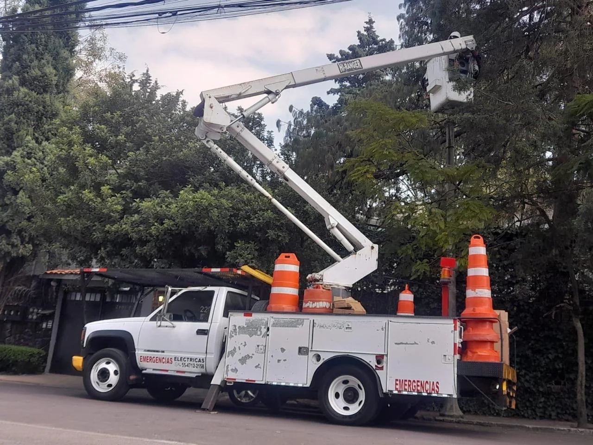

Mantenimiento en altura
Acceso y apoyo en trabajos elevados, considerando altura, alcance lateral, obstáculos, superficie y espacio disponible.
Camión con canastilla para trabajos en altura que requieren movilidad y acceso desde vía o superficie de trabajo.

Altura y alcance de trabajo según unidad disponible.
Mantenimiento, alumbrado, instalaciones, poda técnica y servicios en altura.
Estas son aplicaciones frecuentes de camión canastilla. La configuración final depende del equipo, el sitio, el alcance y las condiciones reales de operación.
Acceso y apoyo en trabajos elevados, considerando altura, alcance lateral, obstáculos, superficie y espacio disponible.
Acceso y apoyo en trabajos elevados, considerando altura, alcance lateral, obstáculos, superficie y espacio disponible.
Acceso y apoyo en trabajos elevados, considerando altura, alcance lateral, obstáculos, superficie y espacio disponible.
Acceso y apoyo en trabajos elevados, considerando altura, alcance lateral, obstáculos, superficie y espacio disponible.
Acceso y apoyo en trabajos elevados, considerando altura, alcance lateral, obstáculos, superficie y espacio disponible.
Acceso y apoyo en trabajos elevados, considerando altura, alcance lateral, obstáculos, superficie y espacio disponible.
Una solicitud completa ayuda a revisar la maniobra desde el primer contacto y reduce vueltas innecesarias antes de preparar la cotización.
Punto máximo que necesita alcanzar el personal o la canastilla.
Distancia lateral y presencia de obstáculos en la trayectoria.
Piso, terreno exterior y condiciones de apoyo del equipo.
Ancho, altura libre, puertas y espacio para maniobrar.
Respuestas rápidas para preparar mejor tu proyecto y elegir la solución adecuada.
Altura aproximada, ubicación, tipo de superficie, obstáculos, acceso al sitio, fecha y duración estimada.
Se revisa si el trabajo requiere elevación vertical, alcance lateral, movilidad alrededor de obstáculos o acceso desde vehículo.
Sí. Las fotografías ayudan a visualizar accesos, obstáculos, superficie y punto de trabajo.
El cotizador concentra servicio, ubicación, fecha, peso, altura y datos de contacto.